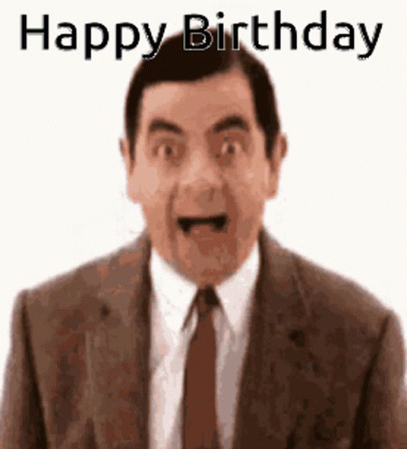
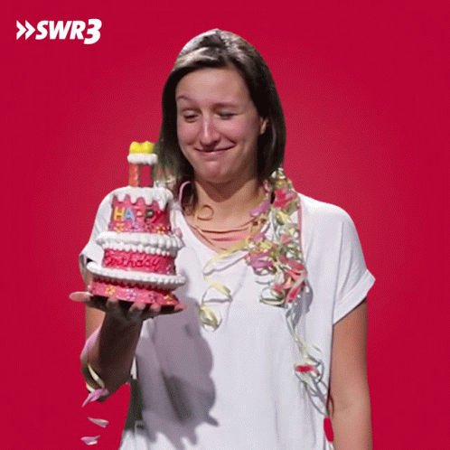
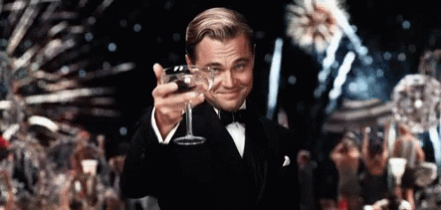
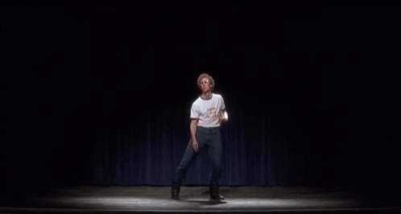

Bugün senin gününİsmail,
İsmail,
iyi ki doğdun!
Arkadaşlarından gelen doğum günü mesajları, tek bir yerde.
Arkadaşlarından, senin için.
İsmail için küçük bir sürpriz
İyi ki doğdun, İsmail.
Bugün senin gününİyi ki doğdun, İsmail ✦ Yeni bir yaş, yeni güzel anılar ✦ İyi ki doğdun ✦ İyi ki doğdun, İsmail ✦ Yeni bir yaş, yeni güzel anılar ✦ İyi ki doğdun ✦
Arkadaşlarından
Senin için birkaç mesaj.
mesajları ✦
Biraz eğlence
Komik GIF’ler.

Yeni yaşa girişim:
GIF · Tenor
Pasta bana mı?
GIF · TenorSürprizi görünce ben:
GIF · TenorArkadaşlar bir araya gelince:
GIF · TenorPasta göründüğünde:
GIF · Tenor
Yeni yaşına!
GIF · Tenor
Dans pistinde ben:
GIF · TenorKutlama devam ediyor!
GIF · TenorYeni yaşın için
20 küçük dilek.
Açılan dilek
Bir sayı seç, bir dilek aç.
İyi ki doğdun,
İsmail.
Yeni yaşında güzel günler.